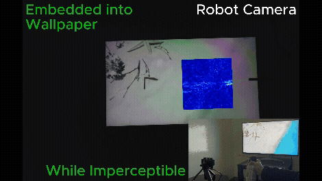

Computational Sensing of Invisible Environmental Dynamics with Off-the-Shelf Sensors
We develop sensing systems that reveal environmental phenomena that are difficult for people and sensors to directly perceive in everyday settings.
- Repurposing commodity sensors to capture subtle airflow, temperature-field, and soil-state changes.
- Turning low-cost platforms into deployable tools for environmental understanding in real-world scenarios.
